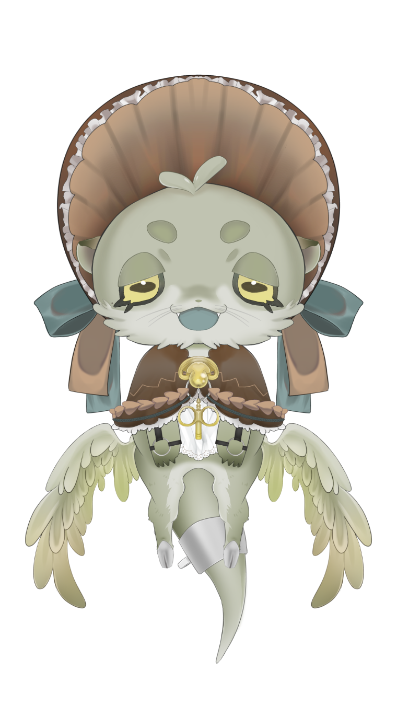

其ノ壱
四ッ谷やえって？

種族
カワウソエルフ族
性別
男の娘
誕生日
4月1日
デビュー日
10月2日
ファンネーム
カワウソの民
やえからのメッセージ
四ッ谷の「ッ」は 小っちゃい「ッ」
イラスト#よつやーと
配信#やえ日誌
総合#四ッ谷やえ
其ノ弐
入信
其ノ参
四ッ谷やえ語録ガチャ
ボタンを押すと ありがたいお言葉が 出てくるだあ
“
{{ quoteText }}
{{ quoteTag }}
其ノ肆
配信予定
{{ s.day }}
{{ s.time }}
{{ s.title }}
予定は変わることもあるだ。最新はこっちで確認してくれだ
其ノ伍
動画・切り抜き
FOR FIRST-TIMERS
はじめての人へ — まず見る3本

其ノ陸
LINK
四ッ谷の思想を 浴びてくれだ
お仕事のご連絡はこちらから
（連絡先は後で設定できるだよう）